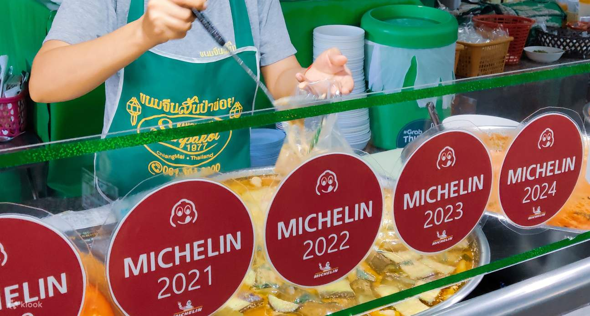

กินอะไรดีระหว่างขึ้นดอยสุเทพ
เส้นทางขึ้นดอยสุเทพมีจุดแวะพักและร้านอาหารกระจายอยู่ตามไหล่เขา ตั้งแต่ร้านอาหารเหนือแท้ ๆ ไปจนถึงคาเฟ่วิวเมืองที่เปิดให้นั่งชมแสงเย็นก่อนเดินทางลงดอย เหมาะสำหรับแวะพักทั้งก่อนและหลังขึ้นไปกราบพระธาตุ

🖼️รูปอาหารเหนือ / ร้านอาหารวิวดอยร้านอาหารเหนือเชิงดอยสุเทพ
ร้านอาหารเหนือแบบดั้งเดิม เด่นเรื่องแกงฮังเล น้ำพริกอ่อง ไส้อั่ว และข้าวซอย เสิร์ฟพร้อมผักสดและขนมจีน เหมาะสำหรับมื้อเที่ยงก่อนขึ้นไปกราบพระธาตุ
คาเฟ่จุดชมวิวข้างทางขึ้นดอย
คาเฟ่ที่ตั้งอยู่บนไหล่เขาระหว่างทางขึ้น มีระเบียงมองเห็นตัวเมืองเชียงใหม่ เหมาะสำหรับนั่งจิบกาแฟหรือชาเย็นพักหายเหนื่อยจากการเดินบันไดนาค
แผงลอยบริเวณลานจอดรถวัด
บริเวณลานจอดรถด้านหน้าวัดมีแผงขายของกินเล่นและผลไม้สดตามฤดูกาล เหมาะซื้อกินเล่นระหว่างรอขึ้นรถกระเช้าหรือเดินขึ้นบันได
เคล็ดลับการกิน
หากต้องการบรรยากาศวิวเมืองยามเย็นพร้อมมื้ออาหาร ควรจองโต๊ะร้านคาเฟ่วิวล่วงหน้าในช่วงเสาร์-อาทิตย์ เพราะที่นั่งริมระเบียงมักเต็มเร็วในช่วงพระอาทิตย์ตก